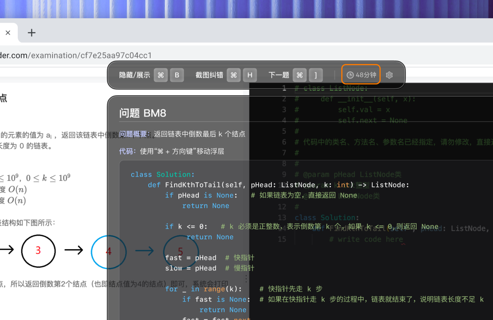

秋招笔试训练
行测题笔试工具怎么选？2027秋招笔试工具指南
先测再选：先用一套限时题找出“不会、会但慢、粗心”三类问题，再选择能按模块训练、计时、记录错因和提供可靠解析的工具。题库越大不代表越适合你。

不同岗位的笔试题型并不相同
| 方向 | 常见内容 | 工具重点 |
|---|---|---|
| 互联网非技术岗 | 行测、产品或运营案例、数据分析 | 计时训练、材料题、开放题复盘 |
| 技术岗 | 编程、计算机基础、逻辑与行测 | 代码环境、测试用例、专项知识点 |
| 银行与金融 | 行测、英语、经济金融、性格测评 | 模块题库、整套模考、时间分配 |
| 央国企 | 行测、时政、企业知识、专业内容 | 目标单位题型与时效性 |
选择秋招笔试工具前，先查看目标公司的招聘通知、往年题型和岗位要求。通用行测可以共用训练体系，但专业题、编程题和企业知识需要单独准备。
行测题笔试工具的五个必备能力
- 模块筛题：能区分言语理解、数量关系、判断推理、资料分析和常识。
- 限时模式：既能做单题计时，也能按整套考试训练时间分配。
- 解析可靠：说明正确答案为什么成立，也解释干扰项错在哪里。
- 错因标签：至少区分知识盲点、方法不熟、计算失误、审题错误和时间不足。
- 趋势统计：按周查看正确率与平均用时，避免被单次高分或低分误导。
四个行测模块怎么练
言语理解
先按题型掌握中心理解、细节判断和逻辑填空，再练限时。复盘时记录错在词义、文段结构还是过度推断。
数量关系
把题目归入工程、行程、利润、排列组合等模型。不会的题先补方法，会但慢的题训练估算、代入和取舍。
判断推理
图形、定义、类比和逻辑判断要分开统计。尤其要记录自己在哪类条件翻译或关系识别上反复出错。
资料分析
同时训练读表、找数、列式和估算。每题都记录用时，防止“正确率高但整套做不完”。
一套两周训练安排
- 第 1—2 天：完成一套模考，建立模块正确率和用时基线。
- 第 3—6 天：每天集中一个薄弱模块，完成学习、练习、错题重做。
- 第 7 天：第二次整套模考，调整做题顺序和放弃策略。
- 第 8—11 天：训练“会但慢”的题型，并补目标行业专业内容。
- 第 12 天：只重做两周内的高价值错题。
- 第 13—14 天：按正式时段与设备完成两次模拟，保持节奏。
QuizMate 如何配合笔试备考
QuizMate 的笔试功能适合用于日常练习、题目解析和知识点复盘。可以把错误题目的考点与错因记录到个人资料中，再针对薄弱模块追问解法。工具给出的答案和解析仍需与可靠题源交叉核对，尤其是时政、企业知识和存在多种口径的专业题。
使用边界：本文讨论的是考前训练。正式笔试中能否查看资料或使用辅助工具，由招聘方和考试平台规定；未明确允许时，应关闭与考试无关的软件并独立完成。
常见问题
行测题笔试工具应该有哪些功能？
按模块筛题、限时练习、答案解析、错题分类和趋势统计是基础。比起总题量，更应关注解析质量和错题能否再次训练。
秋招笔试工具怎么选？
先确认目标行业和岗位题型，再选覆盖对应模块的工具。互联网、金融、央国企和技术岗的内容结构不同，不宜只用一套通用题库。
每天刷多少题合适？
没有统一题量。建议以 60—90 分钟高质量训练为单位，保证当天错题能完成归因和重做；只刷不复盘会快速遇到瓶颈。
从一套限时测评开始
先找到最影响分数的模块，再用 QuizMate 做针对性练习和解析。